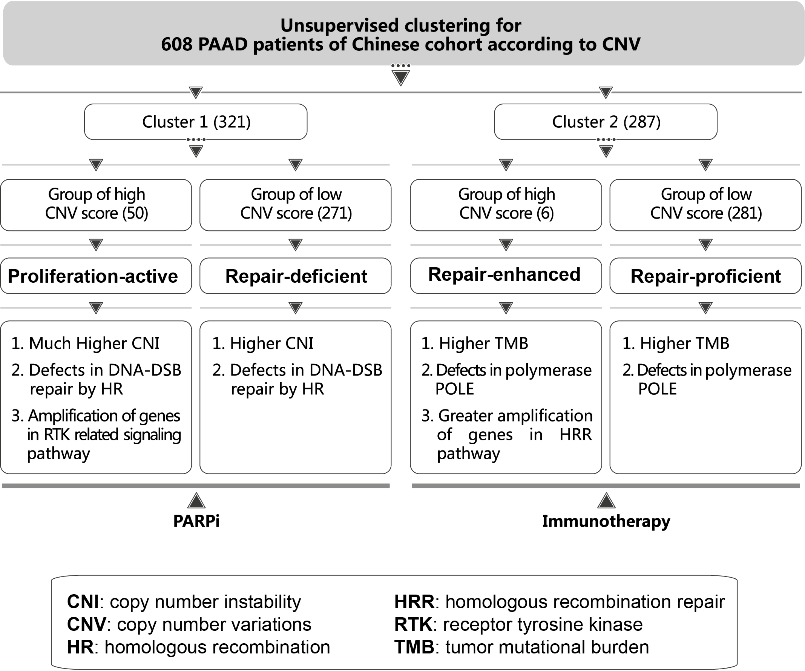

Using the CNV information to identify molecular subtypes informative for prognosis and treatment in pancreatic adenocarcinoma (PAAD) of a Chinese cohort
2021-11-26
Section 1 Overview
1.1 Motivation
According to cancer statistics in China, 2015, PAAD is one of the most aggressive and deadly cancers in China, with an estimate of 90,100 new cases and 79,400 new deaths. We recognize that the high mortality of PAAD in China can be traced back to the lack of comprehensive molecular subtyping (and prognostic models to evaluate risk levels of relapse). We also realize that the current histopathological classifications for PAAD are of limited use to guide clinical decision-making. Therefore, there is an unmet need to identify new biomarkers for molecular subtyping in PAAD.
1.2 What has known in literature
The current stratification for PAAD patients is mainly based on:
1.3 What has done this study
We report the mutational landscape of 608 PAAD patients, the largest cohort ever in China, generating the most comprehensive resource on genetic alternations (covering somatic mutations, pathogenic germline variants, copy number variations, and well-known genomic markers, such as tumor mutational burden, copy number instability and somatic signatures). Based on the information of point mutations in either HRR genes or highly mutated genes, as mentioned above (What has known in literature), we find no associations with prognosis.
We are the first to report that the poor prognosis is associated with amplification of genes involved in DNA repair and receptor tyrosine kinase (RTK) related signaling pathways, establishing the clinical link between CNV and prognosis in PAAD.
Using the copy number variations (CNV) information of genes involved in DNA repair and RTK related signaling pathways, we are able to stratify patients into four molecular subtypes (namely,
repair-deficient,proliferation-active,repair-proficientandrepair-enhancedsubtypes) that differ in prognosis.We suggest the treatment management for PAAD patients (see the figure below): repair-deficient and proliferation-active subtypes are better suited for DNA damage therapies, while immunotherapy highly recommended for repair-proficient and repair-enhanced subtypes.
